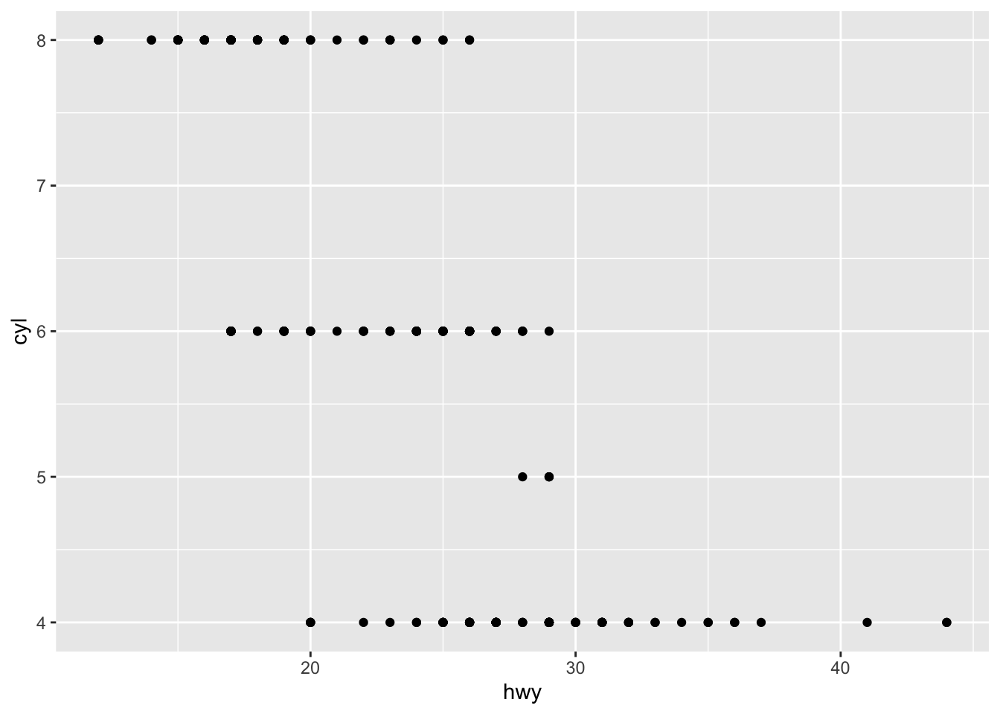
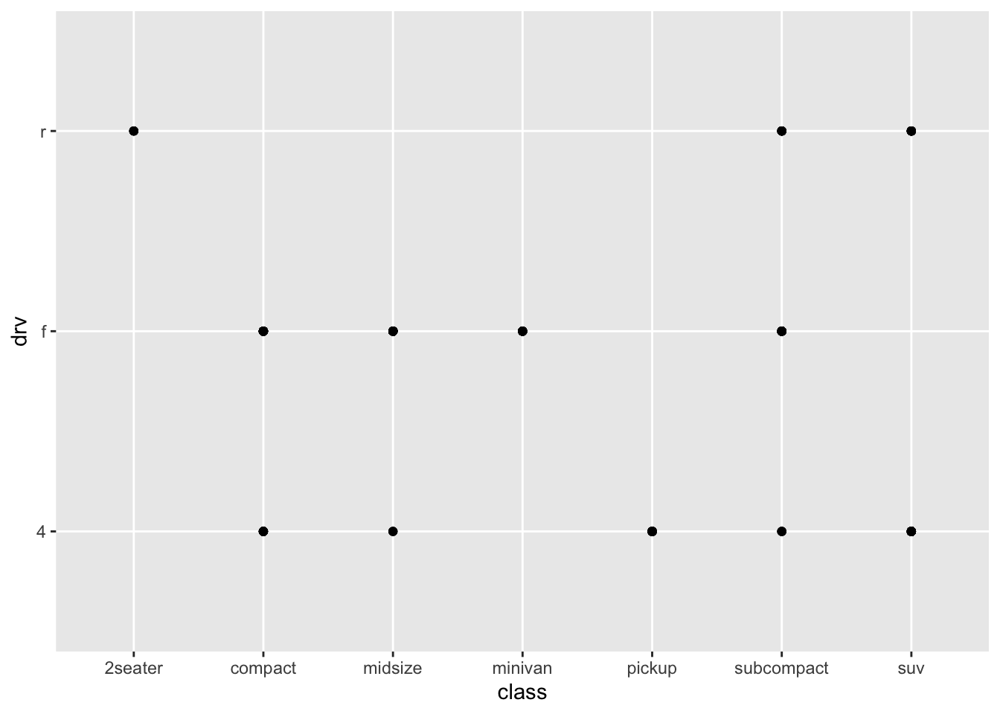
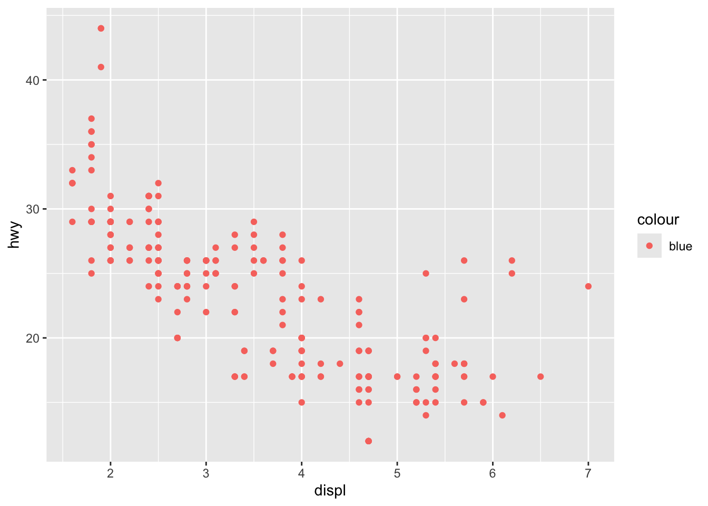
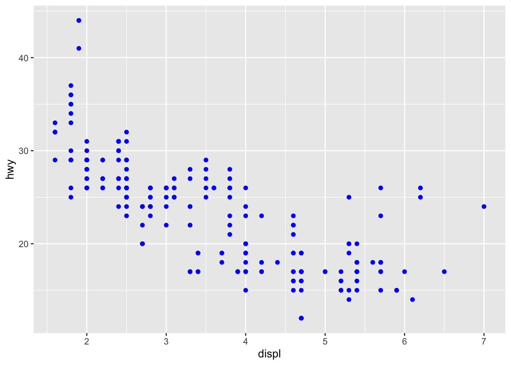
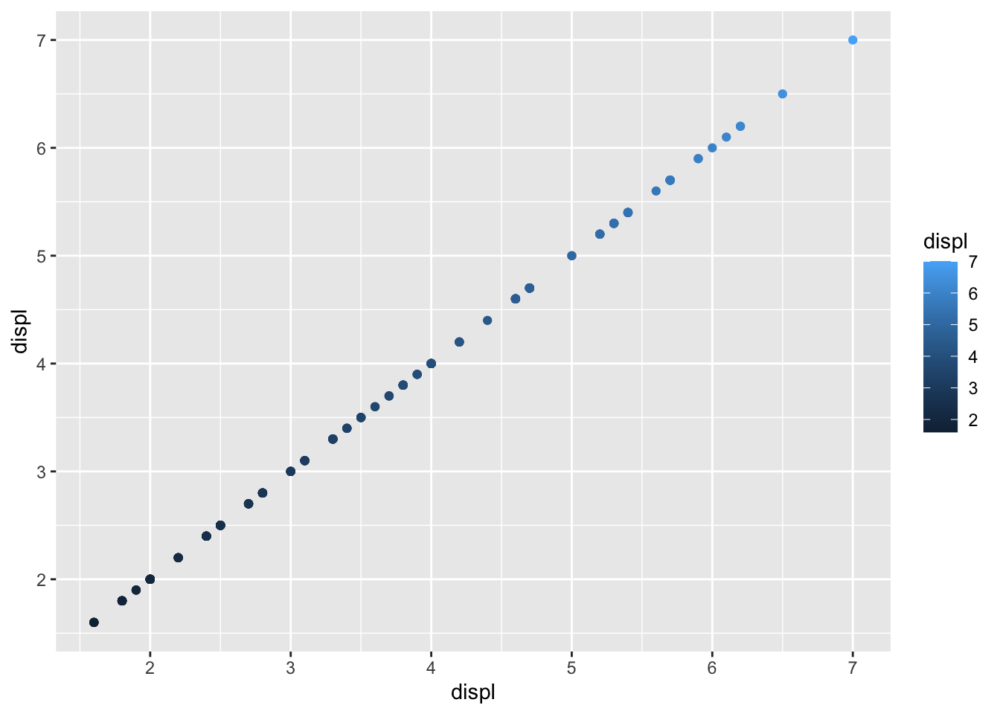
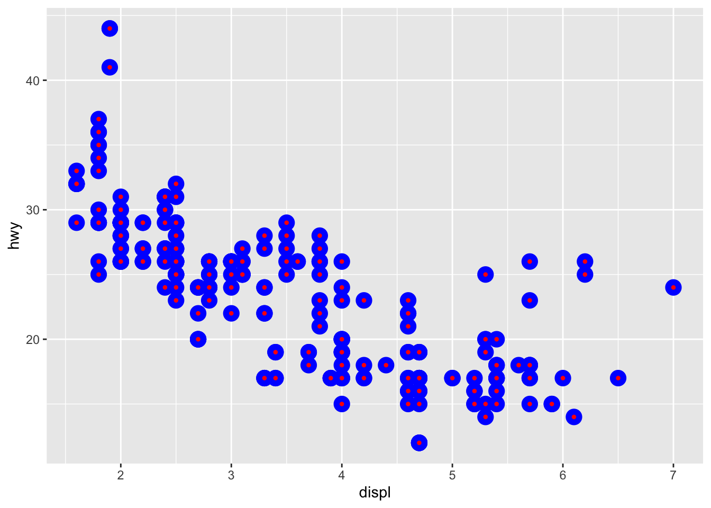
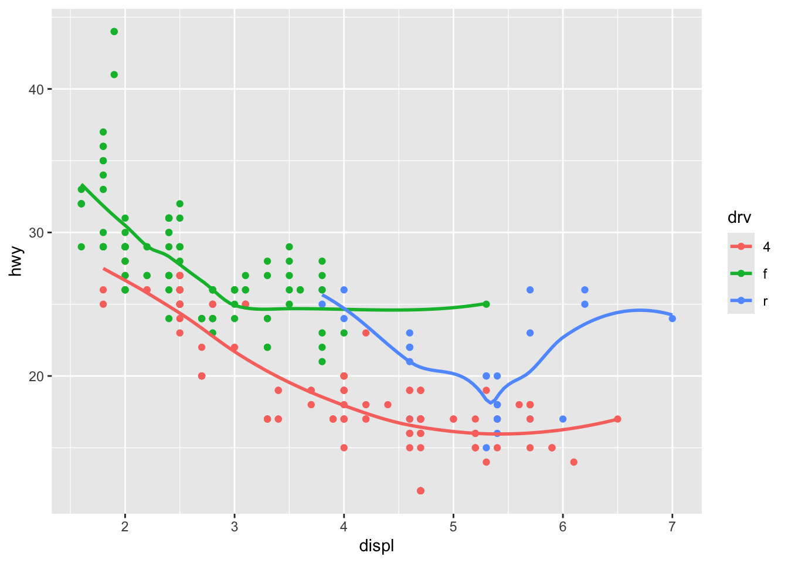

── Attaching core tidyverse packages ──────────────────────── tidyverse 2.0.0 ──
✔ dplyr 1.1.4 ✔ readr 2.2.0
✔ forcats 1.0.1 ✔ stringr 1.6.0
✔ ggplot2 4.0.1 ✔ tibble 3.3.1
✔ lubridate 1.9.4 ✔ tidyr 1.3.1
✔ purrr 1.2.0
── Conflicts ────────────────────────────────────────── tidyverse_conflicts() ──
✖ dplyr::filter() masks stats::filter()
✖ dplyr::lag() masks stats::lag()
ℹ Use the conflicted package (<http://conflicted.r-lib.org/>) to force all conflicts to become errors
Execute ggplot(data = mpg). O que você vê?
ggplot(data = mpg)
Quantas linhas existem em mtcars? e quantas colunas?
nrow(mtcars)
[1] 32
ncol(mtcars)
[1] 11
O que a variável drv faz?
?mpg
Faça um gráfico de dispersão de hmy versus cyl
ggplot(mpg, aes(x = hwy, y=cyl))+geom_point()

Faça um gráfico de dispersão do class versus drv. pq não é útil?
ggplot(mpg, aes(x = class, y = drv))+geom_point()

Página 12
O que há de errado com este código? Por que os pontos não estão pretos?
ggplot(data = mpg) +geom_point(mapping =aes(x = displ, y = hwy, color ="blue"))

Resposta: Talvez porque o argumento color está dentro da função aes(). Ele meio que está atribuindo color à uma “variável” chamada “blue”. Exemplo de código com color fora da função:
ggplot(data = mpg) +geom_point(mapping =aes(x = displ, y = hwy), color ="blue")

Quais variáveis em mpg são categóricas? Quais variáveis são contínuas? Como você pode ver essa informação quando executa mpg?
?mpgmpg
# A tibble: 234 × 11
manufacturer model displ year cyl trans drv cty hwy fl class
<chr> <chr> <dbl> <int> <int> <chr> <chr> <int> <int> <chr> <chr>
1 audi a4 1.8 1999 4 auto… f 18 29 p comp…
2 audi a4 1.8 1999 4 manu… f 21 29 p comp…
3 audi a4 2 2008 4 manu… f 20 31 p comp…
4 audi a4 2 2008 4 auto… f 21 30 p comp…
5 audi a4 2.8 1999 6 auto… f 16 26 p comp…
6 audi a4 2.8 1999 6 manu… f 18 26 p comp…
7 audi a4 3.1 2008 6 auto… f 18 27 p comp…
8 audi a4 quattro 1.8 1999 4 manu… 4 18 26 p comp…
9 audi a4 quattro 1.8 1999 4 auto… 4 16 25 p comp…
10 audi a4 quattro 2 2008 4 manu… 4 20 28 p comp…
# ℹ 224 more rows
Resposta: Consigo ver pelo cabeçalho das variáveis: onde está escrito <int> é porque são números inteiros, logo discretos, quando está escrito <double> é porque são números com casas decimais, logo contínuos.
Mapeie uma variável contínua para color, size e shape. Como essas estéticasnse comportam de maneira diferente para variáveis categóricas e contínuas?
Error in `geom_point()`:
! Problem while computing aesthetics.
ℹ Error occurred in the 1st layer.
Caused by error in `scale_f()`:
! A continuous variable cannot be mapped to the shape aesthetic.
ℹ Choose a different aesthetic or use `scale_shape_binned()`.
Resposta: Para colore size, o código roda, mas ainda assim fica muito difícil de distinguir valores dessa forma. Para o argumento shape o código não roda, acho que principalmnete pelo número limitado de formas.
O que acontece se você mapear a mesma variável a várias estéticas?
ggplot(data = mpg)+geom_point(mapping =aes(x = displ, y = displ, color = displ))

Resposta: Ele vai mapear normalmentr, só não é muito informativo.
O que a estética stroke faz? Com que formas ela trabalha?
?geom_pointggplot(data = mpg)+geom_point(mapping =aes(x = displ, y = hwy), shape =21, color ="blue", fill ="red", stroke =3)

Resposta: Altera a grossura da borda dos pontos.
O que acontece se você mapear uma estética a algo diferente de um nome de variável, como aes(color = displ < 5)
Resposta: Algumas facetas ficarão em branco pois não existem dados com essas combinações de valores das duas variáveis. Assim com no primeiro gráfico há valores que não possuem observações.
Quais são as vantagens de usar facetas, em vez de estética de cor? Quais são as desvatagens? Como o equilíbrio poderia mudar se tivesse um conjunto de dados maior?
Resposta: A vantagem é que pode-se ver cada classe separadamente, sem que uma se sobreponha à outra. A desvantagem é que é um pouco mais demorado para se compreender algumas coisas nesse formato, pois se estivessem em um só gráfico com cores diferentes poderia ser mais rápida a compreensão. Quando há muitos valores diferentes de uma variável, fica quase impossível ter algum insight em cima desses gráficos, pois impossibilita a visualização de todos ao mesmo tempo.
Leia ?facet_wrap. O que o nrow faz? O que o ncol faz? Quais outras opções controlam o layout de painéis individuais? Por que facet_grid não tem variáveis ncol e nrow?
Resposta:nrow é o núemro de linhas que as facetas vão ter e ncol o número de colunas. Exemplo: se eu tiver 3 facetas e digitar nrow = 3, cada linha vai ficar com uma faceta.
Execute este código em sua cabeça e preveja como será o resultado. Depois execute o código em R e confira suas previsões.
ggplot(
data = mpg,
mapping = aes(x = displ, y = hwy, color = drv)
)+
geom_point()+
geom_smooth(se = FALSE)
Resposta: Ele criará um gráfico de dispersão entre displ e hwy com as cores sendo os diferentes valores da variável drv. Depois criará uma linha sem a sombra na borda dela, também com cores diferentes conforme a variável drv.
ggplot(data = mpg,mapping =aes(x = displ, y = hwy, color = drv))+geom_point()+geom_smooth(se =FALSE)
`geom_smooth()` using method = 'loess' and formula = 'y ~ x'

O que show_legend = FALSE faz? O que acontece se você removê-lo? Por que você acha que usei isso anteriormente no capítulo?
Resposta: Ele esconde a legenda de cores/formas/tamanhos do mapping. Caso removido ele mostra a legenda com cores. Acho que usou para mostrar que quando há cores envolvidas o ggplot automaticamente mostra a legenda, o que não acontece em outros gráficos sem cores como aes.
O que o argumento separa geom_smooth() faz? Resposta: Esconde aquela sombra que fica em torno da linha.
Esses gráficos serão diferentes? Por que/por que não?